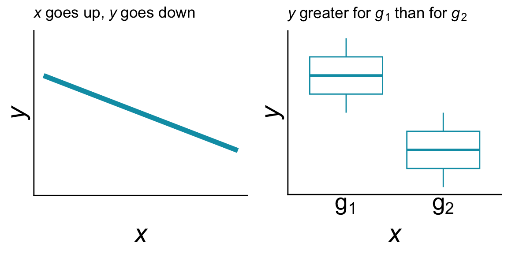

13 How to make a model
13.1 What is a model?
In order to use likelihood to study ecology, we have to be able to make models, but first we need to establish just what is a model? That’s a harder question to answer than you might think. Could an oli be a model? Could a computer simulation be a model? Could an equation relating the tendencies of random variables to one another be a model. The answer to all is likely “yes.” Models can take on many forms and have many valid meanings across different epistemologies. For the purposes of using likelihood to make inference about models, and within the context of this course, we will think of models as “statistical models.” Statistical models are ones that represent mathematical relationships between variables in a data set while also accounting for the randomness and uncertainty in the world around us.
This contrasts with “mechanistic models” which seek to mathematically represent the processes that might be responsible for generating the patterns we see in the world. Mechanistic models contain detailed information about the biology, ecology, and evolution of the systems we study. Statistical models do not contain such detail. Instead, they acknowledge that detail exists, but only try to represent how different random variables might relate to each other. But most often, hopefully at least, statistical models are inspired by our knowledge and hypotheses about processes that could generate those patterns.
With that concept of a model stated, now we have to wonder how do we go from our scientific questions and hypotheses about the world to a model that we can make inference about using the method of maximum likelihood? The process of going from question to model also gives us opportunity to investigate the ways of knowing, world views, and epistemologies that motivate our questions.
13.2 What questions do we ask, why, and how?
The lens through which we view the world is based on our experiences, our cultures, our personal histories. And that lens—that way of knowing—shapes what we perceive to be interesting and relevant questions (Trisos et al. 2021). Historically and into the present, ways of knowing based in western epistemologies have been given preferential treatment compared to other ways of knowing. This is especially clear when we consider the many indigenous ways of knowing that have enabled the flourishing of communities and societies around the world (Trisos et al. 2021). Hawaiʻi is a prime example where ʻŌiwi epistemologies have supported sustainable socio-ecological systems for generations up until recently (Gon III et al. 2018; Wilson-Hokowhitu 2019). Indeed, the settler colonial violence against kānaka ʻŌiwi and ʻŌiwi epistemologies is likely responsible for not only immense human injustice (Liliuokalani 1898; Kelly 1992; Trask 1993; Kauanui 2008; Greywolf et al. 2023) but also ecological collapse (Gon III et al. 2018).
This course and me, your instructor (hi, Andy here) cannot teach methods outside of the western tradition because I simply do not have that training nor knowledge. To attempt to do so would be a disservice to any way of knowing outside of western epistemologies where my training lies. We will, however, recognize that a multitude of ways of knowing exist and are valid, and we will recognize how racism and colonialism have motivated the attempted erasure of those ways of knowing and the people who practice them. To understand the connection of racism and colonialism to the contents of our course we might borrow from or be inspired by ʻŌiwi methodologies to consider the moʻokūʻauhau (Wilson-Hokowhitu 2019) of likelihood methods. Moʻokūʻauhau is an element of ʻŌiwi methods and among its meanings communicates the idea of genealogical relationships and learning about a study subject through its relationships across history.
13.3 Moʻokūʻauhau of likelihood
As we will see in the coming labs, many conventions we still maintain about statistical models come to us from the genealogy of those methods: the notation, the ways parameters are conceptualized, and default settings of core functions in R. It is reasonable then to ask, what other ideas may have carried through the genealogy to the present to impact how we use statistical models?
The method of maximum likelihood as we use it can be traced back to the work of R. A. Fisher starting in 1912 (Bodmer et al. 2021). While Fisher made many contributions to ecology, evolution, and statistics, he was also very much convinced by and a promoter of eugenics and so called race science. These pseudo-scientific ideas were, and continue to be, the tools of genocide, colonialism, racism, and extractive relationships. Several quotes from Fisher can be used to surmise his opinions

Available scientific knowledge provides a firm basis for believing that the groups of mankind differ in their innate capacity for intellectual and emotional development (UNESCO 1952).
I am sorry that there should be propaganda in favour of miscegenation [bigoted term for marriage between perceived racial groups] in North America as I am sure it can do nothing but harm (quoted in Bodmer et al. 2021).
It should be noted the first quote was part of Fisher’s dissenting opinion against the UNESCO report finding no scientific basis for racial differences in intellectual and emotional abilities. The report was created in response to the horrors of the Holocaust, disavowing the pseudo-science used to support Nazi atrocities. Again, Fisher dissented against this report.
Fisher was also convinced that smoking tobacco was not detrimental to human health, and his work was sure enough funded by the tobacco industry. No judgement to anyone who smokes tobacco, but we definitively know it is linked to adverse health outcomes; trying to use statistics, as Fisher did, to argue otherwise is disingenuous at best.
From the enthusiastic embrace of the genocidal pseudo-science of eugenics to the willful conflict-of-interest use of his own statistical methods to support the lies of the tobacco industry, we can see Fisher had flawed abilities to reason clearly. Clayton (2021) draws a direct line of decent from Fisher’s obsession with using statistics to “prove” incorrect propositions to the current replication crisis in statistics and science where statistically “significant” results are published but cannot be reproduced. Indeed, the moʻokūʻauhau can predict our current situtation and illuminate how we got here.
What does all this mean for our use of methods like likelihood? My approach, speaking as me Andy, is threefold
- Being aware that we (and Fisher and everyone) are responsible for the harm we cause with our hateful ideas, but we also do not own the positive outcomes that other people might produce with our useful ideas; likelihood has been used and adopted by many thousands (10s, 100s of thousands perhaps) for constructive work and the contributions of those people are not owned by Fisher
- Being self-reflective about what questions we ask, how we ask them, and why can help us make use of tools like likelihood while pushing back against their original uses and not repeating extractive, discriminatory, or violent pseudo-science
- Being able to use these tools, and be ethical about it, will help you get a job, and in your position you have a chance to make positive change
13.4 From question to model
With all that said, it’s time to return to the topic of moving from question to model. The trick is to go from question to prediction to model.
13.4.1 Question to prediction
We tend to ask questions in the form of “what is the effect of \(x\) on \(y\)” where \(x\) is some explanatory variable and \(y\) is the response. We likely have a deeper idea about how ecology and evolution, or other aspect of biology, determine the impact of \(x\) on \(y\), but for a statistical model we only need to ask how they are related.
Here are two example predictions:
- if \(x\) goes up, \(y\) goes down (they are implied to be numerical variables and have a negative relationship)
- \(y\) is greater for group \(x = g_1\) than for group \(x = g_2\) (\(x\) is implied to be a discrete variable)
Predictions can sometimes more easily be expressed as a conceptual figure or graph:
Stating, and perhaps visualizing, our prediction helps us identify the variables of interest, which is the response variable and which are explanatory, and also helps us understand what kind of relationship we are trying to represent in our model. Of course we should note: predictions can be wrong (i.e. the data look different) and that’s part of doing science.
13.4.2 Prediction to model
But, we are not yet to a model. In statistics we always deal with randomness. To articulate a statistical model we have to account for how randomness enters into our data set. Sometimes it can be useful to think about distinct sources of randomness: those deriving from biology, and those entering our data as accidents or artifacts.
13.4.2.1 Biological sources of randomness
If the processes that produce the data we are studying all contribute to those data in additive or multiplicative ways, we have reason to believe the randomness in the data might follow a normal distribution. Additive and multiplicative processes might include the combined effect of gene expression networks on development, or the impact of many environmental variables acting together to determine a phenotype.
Another type of randomness could result from the many factors that determine birth and death in a population, or speciation and extinction at the species level. These kinds of general “birth” and “death” processes lead to randomness that has a negative binomial distribution, though we often approximate or simply that randomness into a Poisson distribution. If we are looking at the presence or absence of an entire population then these birth death processes produce randomness according to a binomial distribution.
13.4.2.2 Sampling and measurement sources of randomness
It is well known that we can only be so precise in our numerical measurements. Imprecision and human error is often assumed to be governed by many tiny accidents working together in an additive way, thus the Central Limit Theorem applies and such imprecision might indeed be normally distributed.
We are also only human and cannot possibly create infinite sample sizes. The fact that samples sizes are finite introduces an element of randomness sometimes called “sampling error”—the fact that finite data sets will miss some things. A common example in ecology is that we fail to detect a species or population we are looking for, even if that species or population is present in our study area. Such imperfect detection results in randomness following a binomial distribution.
13.5 Finally, how to make a model
To incorporate these sources of randomness with our predictions to form a complete model, it can be useful to think of how we would simulate a data set similar to our own. For example, “if x goes up, y goes down” could be simulated by letting the mean of \(y\) (call it \(\bar{y}\)) change with \(x\): \(\bar{y} = b - a \times x\) where \(b\) is an intercept and \(a\) is a slope. Such an equation will indeed produce the conceptual graph we showed earlier.
Then perhaps the randomness in \(y\) comes from a normal distribution, so we model \(y\) as distributed \(y \sim \mathcal{N}(b - a \times x,~\sigma)\) where \(\sigma\) is the standard deviation and tells us just how random \(y\) is (larger \(\sigma\), more random).
For purposes of using maximum likelihood, making a model comes down to connecting a question to predictions and imagining how those predictions could vary according to one or more sources of randomness.
Bodmer W, Bailey R, Charlesworth B, Eyre-Walker A, Farewell V, Mead A, Senn S. 2021. The outstanding scientist, RA fisher: His views on eugenics and race. Heredity 126:565–576. Springer International Publishing Cham.
Clayton A. 2021. Bernoulli’s fallacy: Statistical illogic and the crisis of modern science. Columbia University Press.
Gon III SM, Tom SL, Woodside U. 2018. ʻĀina momona, honua au loli—productive lands, changing world: Using the hawaiian footprint to inform biocultural restoration and future sustainability in hawai ‘i. Sustainability 10:3420. MDPI.
Greywolf C, Lowe J, Casken J, Kataoka-Yahiro M, Millender E. 2023. Discrimination, racism, social inequality, and injustice experienced among native hawaiians through the lens of historical trauma. IJSBAR 69:36–46.
Kauanui JK. 2008. Colonialism in equality: Hawaiian sovereignty and the question of US civil rights. South Atlantic Quarterly 107:635–650. Duke University Press.
Kelly M. 1992. The great mahele and other acts of cultural genocide. Ethnic Studies Program.
Liliuokalani Q. 1898. Hawaii’s story by hawaii’s queen. Tuttle Publishing.
Trask H-K. 1993. From a native daughter: Colonialism and sovereignty in hawaii (revised edition). University of Hawaii Press.
Trisos CH, Auerbach J, Katti M. 2021. Decoloniality and anti-oppressive practices for a more ethical ecology. Nature Ecology & Evolution 5:1205–1212. Nature Publishing Group UK London.
UNESCO. 1952. The concept of race: Results of an inquiry. United Nations Educational, Scientific,; Cultural Organization. Available from https://unesdoc.unesco.org/ark:/48223/pf0000073351.
Wilson-Hokowhitu N. 2019. The past before us: Moʻokūʻauhau as methodology. University of Hawaii Press.